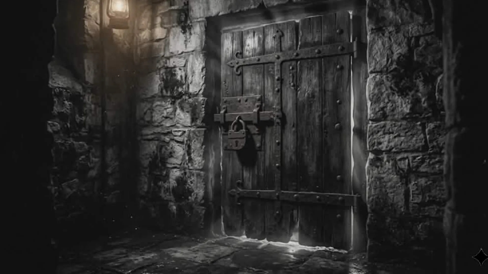

Vol. I · Issue No. 1 · April 29, 1887
THE THIRTEENTH KNOCK

She had always been meticulous about locks.
Every evening, Mrs. Hartwell would make her rounds — the parlour door, the cellar hatch, the servants' entrance, and finally the great oak door at the front of the house. Twelve locks. Twelve turns of the key. She counted them aloud, a ritual as old as her tenure in the Ashford estate.
On the night of the twenty-third, she heard knocking.
One. Two. Three. She set down her candle and listened, certain it was the wind pressing against the shutters. Four. Five. Six. The knocks were deliberate, unhurried, as if the caller had all the time in the world. Seven. Eight. Nine. She rose from her chair, her joints protesting the cold. Ten. Eleven. Twelve.
She opened the door.
The fog lay thick across the moor. The gas lamp at the gate burned low, its light swallowed before it reached the path. There was no carriage, no figure, no footprint in the frost.
She was about to close the door when she heard it.
The thirteenth knock.
It came from behind her.
From inside the house.
She turned slowly, holding the candle before her like a ward against whatever waited in the dark. The hallway was empty. The portraits on the wall — the Ashfords going back six generations — stared forward with their painted eyes.
All except one.
The portrait of Edmund Ashford, dead these forty years, had turned its gaze toward the cellar door.
Mrs. Hartwell had not noticed, until that moment, that the cellar hatch was open.